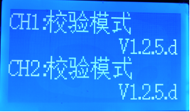
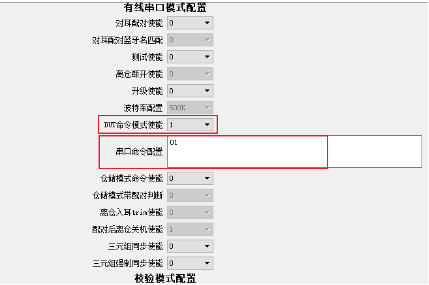

3.15. 其它常见功能配置和使用
3.15.1. 串口模式校验功能使用说明
V1.2.5.d 增加串口进行校验模式配置

V1.3.2增加校验蓝牙名
使用该校验功能需要开启有线串口模式配置下的测试使能，需关闭升级使能。
设置“0”关闭对应的测试选项。
设置“1”开启对应的测试功能，具体的测试指标由其下方的配置框设置。
该模式下设备不在线时显示校验模式以及版本号，在线的情况下显示测试的结果。

V1.3.2版本修改显示校验结果上面一行固定显示下面一行为刷新显示。
V1.2.5.d增加蓝牙2.4G接入码设置
使用时打开拨码开关6
该值为“0”默认通用蓝牙连接；
该值非“0”为设置的配对码。
3.15.2. 耳机离仓入耳trim功能配置使用
V1.2.6版本添加离仓入耳trim功能

设置为1使能该功能，会进行入耳trim,需要对应的SDK支持。

设置为1使能该功能，配对完成拿出充电仓会自动关机，同样需要对应的SDK支持。
3.15.3. 耳机空间音效校准使用说明
V1.2.8.b之后的版本支持耳机空间音效校准功能（
该配置需sdk支持）设置测试盒校准命令：“DUT命令模式使能”设置成1，“串口命令配置”设为01，该配置与“有线串口模式配置”的其它使能项均互斥。

UI显示内容含义表
显示及提示音内容 |
具体含义 |
|---|---|
测试盒“di”一声，显示“trim run…” |
开始校准 |
显示“trim run…” |
校准中 |
测试盒“di”两声，显示“trim succ !” |
校准成功 |
测试盒“di”三声，显示“trim fail !” |
校准失败 |
3.15.4. ANC校准使用说明
V1.2.8.g之后的版本支持ANC校准功能（该配置需sdk支持）
拨码开关3、4、5、6必需关闭，如下图所示
上位机打开“ANC增益校准使能”配置，设置“ANC增益调整步进”值，“ANC产品形态”保持默认的“tws_ff”，重新上电。

测试盒与耳机的连接示意图以及ANC测试界面如下图所示

界面及按键说明： 界面说明：
1：显示左耳耳机的在线状态
2：显示左耳耳机的ANC数字增益
3：显示右耳耳机的在线状态和ANC数字增益
图中的“▲”符号表示当前调节的是哪个耳机的ANC增益。
按键说明：
KEY1：单击增加耳机ANC数字增益
KEY2：单击选择左右耳，长按解除当前对耳的配对
KEY3：单击减小耳机ANC数字增益
直接放入新的一对耳机，也能自动解除上一对耳机的配对，并自动配对新的一对耳机。
UI的错误提示含义：
界面显示 |
错误原因 |
|---|---|
ver err |
耳机的ANC版本不支持 |
spp err |
耳机不支持ANC功能 |
cmd fail或cmd unf |
测试盒与耳机通信出错 |
timeout |
测试盒与耳机通信超时 |
3.15.5. TWS三元组同步功能使用说明
功能使用说明
V127b新增三元组同步功能。针对tws产品需要同步三元组的情况，需要先使能配对功能，配对完成之后才可以进行三元组同步。
对耳配对完成，且三元组同步使能设置为1的情况下，会进入三元组同步流程，第一次同步如果其中一个耳机没有三元组，同步流程之后会显示同步完成，之后上电会显示已同步。
三元组强制同步使能功能适用于：两个耳机都存在三元组但是数据不一致的情况，此时设置该功能为1，会把三元组存在于flash的耳机数据同步到另一个耳机，另一个耳机之前数据会被覆盖，需谨慎操作。
UI显示内容含义表
显示内容 |
具体含义 |
|---|---|
无三元组 |
TWS设备中有三元组信息，通过串口连接TWS，使能该测试功能后，提示无三元组 |
已烧录 |
两个tws的flash中分别已经烧录了三元组信息 |
同步完成 |
tws其中一个没有三元组信息,另一个flash中存在三元组信息，第一次烧录完成后提示同步完成 |
已同步 |
两个tws中已经同步过三元组，除了第一次同步外，之后的同步显示已同步 |
数据不一致 |
当两个tws中的三元组信息不一致，并且没有使能强制同步的条件下，显示数据不一致 |
同步失败 |
由于内存读写操作导致三元组信息没有完成同步，显示同步失败 |
3.15.6. BLE模式自定义广播信息显示使用说明
新增BLE广播包自定义字段显示功能。目前支持的显示字段类型定义为0xFE,即广播包中定义0xFE类型的数据，测试盒解析到该类型的数据发送给上位机进行显示。
广播包的内容需自行在对应的SDK中生成，且最大长度不能超过16byte,超过部分将不会显示。
如下图 ID数据选项显示：

3.15.7. 测试盒更新音频文件说明
Note
把需要更新的sbc文件，上下首两个音频文件，名字为media1.sbc media2.sbc，放到AC690x_1T2测试盒_从机Vx.x.x.exe同级目录下（没有这两个文件用默认自带的）。
方法1：重新升级测试盒从机代码即可，升级从机过程参考测试盒固件升级的方法1，主机不用升级。
方法2：假如目录下有media1.sbc media2.sbc，点击有AC690x_1T2测试盒_从机Vx.x.x.exe会目录下生成jl_690x.bin（这个bin文件已经替换了新的提示音），然后参考测试盒固件升级的方法2升级即可。

3.15.8. 测试盒更新对AC691X的支持
频偏校准：
拨动拨码开关，使能测试盒频偏校准模式后，把ext_app.bfu（BLE和EDR使用不同的ext_app.bfu，请注意区分）文件放在tf卡并插入测试盒即可。
Note
1. 如果测试盒的tf卡中没有ext_app.bfu文件，频偏校准后不会保存到芯片中。
2. 频偏校准时，tf卡里不能放有jl_690x.bfu升级文件，有的话会优先选择jl_690x.bfu进行升级。
升级AC691X蓝牙名字（BLE和EDR使用不同的jl_690x.bfu，请注意区分）：
通过otp.exe工具打开配置选项
需要勾选如下图的设置用户配置（不需要更新aec配置的话，aec配置选项不用勾选），保存为ac691x.cfg，放到bt_updata目录下，通过工具cfg_updata.bat进行生成jl_690x.bfu进行测试盒无线升级。

aec_cfg升级：
勾选如下图的设置AEC配置（不需要更新名字配置的话，用户配置选项不用勾选），保存为ac691x.cfg，放到bt_updata目录下，通过工具cfg_updata.bat进行生成jl_690x.bfu，把生成升级文件jl_690x.bfu文件放在tf卡并插入测试盒即可。

说明：可以同时更新名字和aec参数，同时勾选用户配置和设置AEC配置，生成的bfu可以进行同时更新。（不需要更新的不用勾选）
支持flash版本芯片BLE升级（v101_C版本以上才支持）
操作步骤：
A、进行BLE升级前，需将BLE使能开关打开；
B、无线升级和2.1升级一样，可以通过sd升级及pc在线升级方式，操作步骤同蓝牙设备无线升级流程
C、通过sd卡升级，需将jl_ac691x.bfu改成放到updata.bfu测试盒才可以识别。